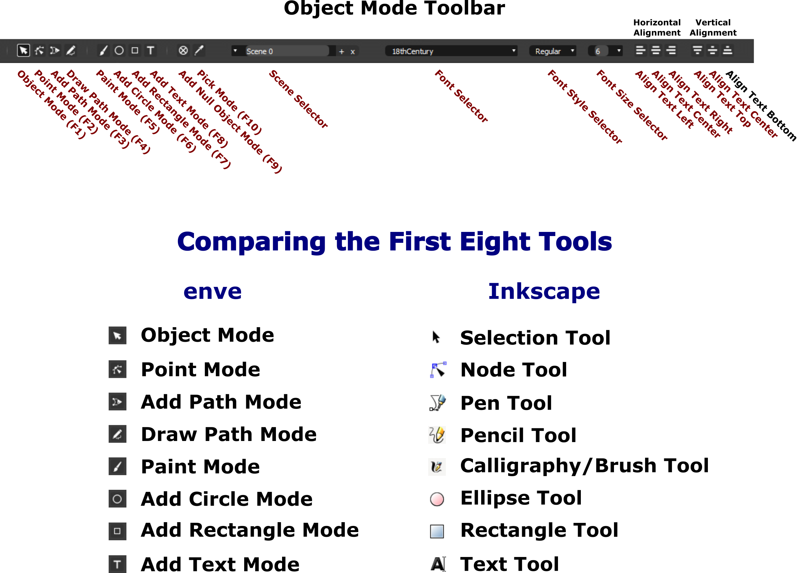
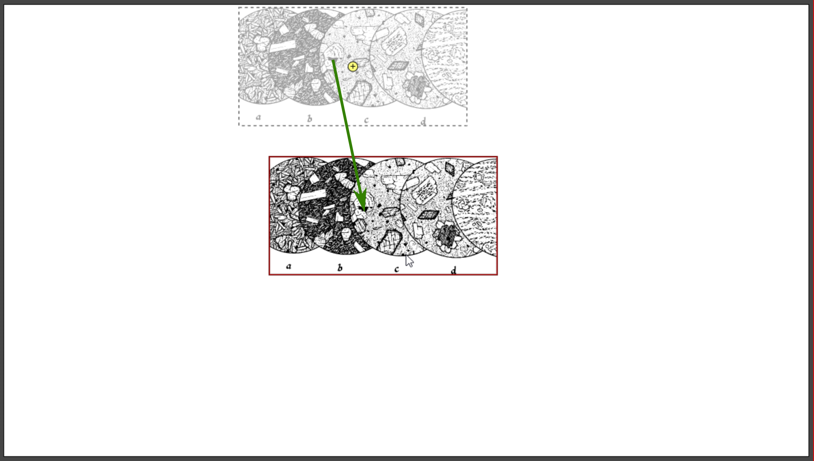
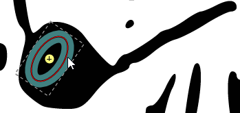
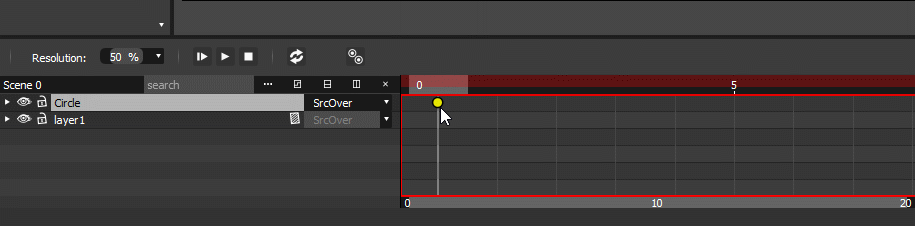
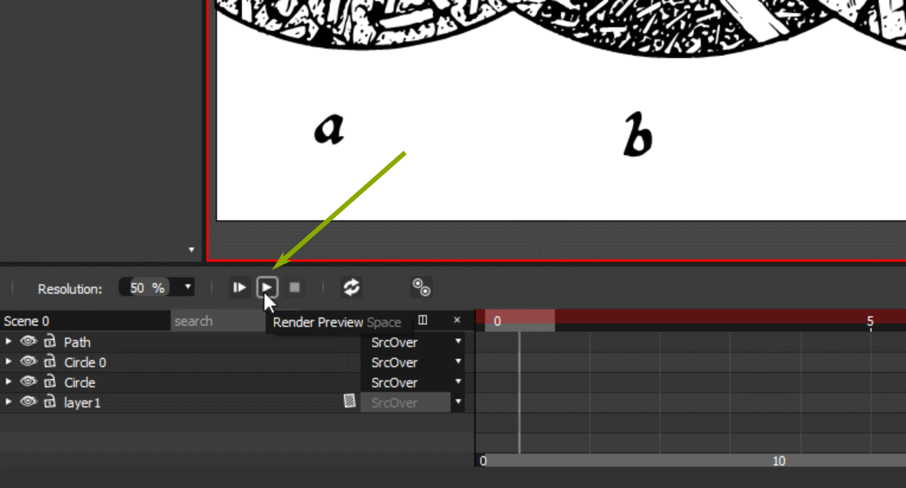

Inkscape can create backgrounds over which figures can
be animated. Moreover, Inkscape can create those figures to be animated.
An external animation program can then help you determine how those
figures are to be moved and placed over the background you have either
created or are about to create. When the components work to satisfaction,
the animation file can then be rendered, that is, drawn into an animation
video clip that can be embedded in an HTML file and displayed in a
browser.
In this lesson, you’ll learn how to do the following:
Import a bitmap image.
Convert a bitmap image into an svg graphic image.
Import a svg image file into a separate animation program.
Animate a portion of an imported background.
Render the animation into a video clip.
Embed the animation video clip into an HTML file that can be uploaded
to the World Wide Web.
Inkscape and Animation
At the time of writing this tutorial (18 August 2021), Inkscape does not
have the capabilities of producing animation. However, it can help you create
the building blocks that go into animation. These building blocks include
backgrounds and figures for later animation. Backgrounds and figures, though
they are static images, can be imported into an animation program which can
then create the type of motion you would see if you drew figures on
consecutive pages in a writing pad, and then flipped the pages rapidly enough
to simulate motion. In this case, you don’t have to draw every single
page. The computer does much of the tedious work of drawing and flipping the
pages for you.
Original image for animation background. Dr. Alex McBirney
looks out at us from specimen C.
This image is reproduced from a book on Igneous Petrology,
written by Alexander McBirney. Igneous Petrology is an out-of-print
university textbook about the chemistry and mineralogy of lavas that
McBirney and colleagues obtained out in the field. Circles A, B, C, and D
are drawings of thin slices of different lava rocks, called thin sections,
used here in studying what different lava rocks look like under a
microscope. McBirney hand-drew all of these images.
As an experiment, Dr. McBirney also drew little cartoon caricatures of
himself in several of the specimens. He wanted to test whether serious
scientific publishing companies were indeed stringently careful in
reviewing the books they were about to publish.
Every little representation of the good professor made it through the
review process unscathed, which makes one wonder about the power of close
scrutiny of some book publishing companies. One such leprechaun peers out
at us from specimen C.
You will animate Dr. McBirney. He will puff a smoke ring out of his
pipe and then wink at you.
The background image is a jpg, that is, it is a bitmap image. You
will convert it into a scaled vector graphic (.svg) file so that the
animation program you’ll be working with shortly can accept it.
Start Inkscape.
Choose File > Import …, navigate to where you are storing file
Background_original.jpg, and open it.
You will now convert the bitmap image into an .svg image by using
Inkscape’s Trace Bitmap function.
Click on the image with the Select Tool ().
Selecting the background bitmap image in preparation for
conversion from jpg to svg.
With the image selected, choose Path > Trace Bitmap ….
Change the default Brightness threshold from 0.450 to
0.500. This setting produces good definition of curves and lines
in the conversion process.
Trace Bitmap dialog box. Brightness threshold is changed to
0.500.
Click on the Update button. A small preview representation of
the converted appears in the right-hand window in the dialog box.
Clicking on the Update button and previewing the
soon-to-be-converted image.
Click on the OK button. After a few seconds, an svg image is
created from the jpg and is overlain over the jpg.
SVG conversion completed.
The svg image is already selected, as can be seen by its bounding
box and sizing handles.
Move the converted image off the underlying bitmap version of the
image so that the two can be compared.
Comparing bitmap and svg images.
The svg image compares very well to the original bitmap jpg image.
Dismiss the Trace Bitmap dialog box and delete the bitmap
image, keeping only the converted svg version.
File > Save As… and save the svg image as
Background.svg in a convenient storage location.
File > Quit to exit Inkscape.
Downloading and Installing the enve Animation Program
Maurycy Liebner is developing an animation program, called enve
that allows you to create two-dimensional vector and bitmap animation.
Animations can also include sound and video. It is easy to download and
install. The installer file is 82.5 megabytes in size, of moderate size for
modern-day computers.
enve is not a video editor, such as VSDC Video Editor and
Openshot (both are freeware video editing programs), but an animator,
which is a different animal. It takes vector (svg) images that you create and
and makes time-based changes to them as you desire. enve, for an aside,
stands for:
Double-click on the installer program to start the installation
process.
If a warning dialog box appears Do you want to allow this app
from an unknown publisher to make changes to your device?, click on
Yes. The Ready to Install dialog box appears.
Click on the Install button.
Ready to Install dialog box.
The next dialog box that appears asks you whether you want a desktop
shortcut icon installed. Check the checkbox if you so desire and then click
on the Next button.
Select Additional Tasks dialog box.
enve is installed on your computer. Because the enve
file isn’t large, it installs quickly.
Installing progress box.
Once installation has completed, you are given the option of
launching enve immediately. Keep the checkbox checked and click on
the Finish button to launch enve.
Completing the Setup box.
Getting Acquainted with enve
When enve first launches, its welcome page shows you a request
window for support. If you can help Maurycy out, it would be wonderful on
your part. Otherwise, click on the Done button to reveal the main
welcome window.
enve welcome page with request for support dialog
box.
Every time that you launch enve, a new animated technique tip
is shown in the initial file open dialog box.
enve welcome page with request for support dialog
box dismissed.
Click on the New button in the Open File/Create New
File dialog box. The Scene Settings dialog box appears.
Scene Settings dialog box.
Change the width to 1080 and the height to 768.
This animation will be five seconds long, so set the Duration to
0 to 50 Frames at 10 frames per second
(Fps).
Scene Settings dialog box with settings updated.
Click on the Ok button. The enve window appears.
The enve window with main components
labeled.
The enve screen has many of the tools that Inkscape has. They
are organized differently, and yet their functions are basically the
same.
Look at the Object Mode Toolbar. The first eight icons on the left
are similar to those found on Inkscape’s toolbox, as shown below.

Object Mode Tools Control bar and comparison of first eight
enve graphics tools with Inkscape’s.
Putting the Animation Together
You’ll start by importing the background upon which the
animation will take place.
Choose File > Import File…, navigate to where you have file
Background.svg stored, select it, and click on the Open
button to open it. The background image appears after a few seconds.
Importing the original svg art file.
The Object Mode tool should be active by default when you
first start enve. Hover the Object Mode tool cursor over a
black area to activate the moving function. A black border appears
indicating that the image can be manipulated.
Click-drag the image to the center of the canvas. So far, tools work just
as they do in Inkscape.

Moving the image to the center of the canvas.
You will now scale the image so that it fills the canvas. Here is
where the scaling function differs from what Inkscape has.
With the Object Mode cursor active, click on a black area in the
image so that a black border appears around the whole image. The image is
now manipulable.
Press S to turn on scaling. A dashed line appears between the
cursor and a circle with a cross inside it.
This circle is called the image’s pivot point (). It acts as an
origin from which an object can be resized, or about which an object can be
rotated, hence pivot point.
Without pressing any key, just pull the cursor away from the pivot point.
The image expands. If the image is off-center, then turn off the scaling
function by clicking the mouse, repositioning the mouse, and then pressing
S again to turn scaling back on.
Pressing S to scale the image.
Move the image and rescale it until it fills the canvas. Play around
with moving and rescaling the image so that you get a feel for how the two
functions work.
Pressing S to scale the image.
Save your work by choosing File > Save As…. When the
Save File dialog box appears, name your animation file
GeniusAtWork) so that the HTML page that you will embed it in later
will recognize it, navigate to where you want to store it, and click on
the Save button. enve automatically appends the extension
.ev to the filename so that enve can recognize it as an
enve file.
Now that you have a good idea of how to use both the moving and
scaling functions, you will now use enve’s zoom function.
The zoom function is different from the scale function because it
magnifies the whole canvas, not just a selected object. Do note that,
when you scale an object, you are resizing it for the animation you intend
to create. Zooming in on an object does not rescale it for the animation
— it increases or decreases the magnification of whatever you are
looking at, like a telescope or microscope, so that you can see details
better that you need to see without resizing the image. So, scaling actually
resizes images and image components, and you will see that resizing in the
animation. Zooming should be used strictly for better viewing without
changing the size of images for purposes of the animation.
You zoom in by pressing <Ctrl>-+ (Control key and plus sign)
and zoom out pressing <Ctrl>-- (Control key and minus sign).
For quick zooming, press the Control key and roll the mouse wheel. To
return to the default magnification, press <Ctrl>-0 (Control
key and zero).
Zoom in on Dr. McBirney using a combination of the move function and the
zoom function. Don’t use the scaling function with S because
you will resize the background image. Zoom works as if you are looking more
closely at what you’re working on.
Pressing the Control key and rolling the mouse wheel to zoom
in on Dr. McBirney.
You will now start drawing a smoke ring that will come out of Dr.
McBirney’s pipebowl. Click on the Circle Mode icon () in the
toolbar and draw a circle near the pipebowl. By default, it will have a
black stroke and transparent color fill.
Drawing the beginning of the smoke ring circle.
The circle you just drew is selected. The word Circle appears
in the Selected Objects panel on the left side of the enve
canvas and is highlighted.
Click on the Expand Item arrow () to show the
components and attributes that can contribute to animating the circle.
Expanding the circle object in the Selected Objects
panel.
You will now activate the Animation Recorder by clicking on the
white discs in front of items that are to be animated. By clicking on these
discs, the Animation Recorder “remembers” which objects and
object attributes are to be changed with time. The Animation Recorder also
allows you to change how animated items are to change according to your
vision.
Click on the white disc on the transform item line. It turns
red, indicating that transform functions can be changed.
Click on the Expand Item arrow () for the
outline attribute.
Make the black circle thicker and color it medium gray.
Click on the thickness Animation Recorder disc (it turns red)
and change the thickness to 3 in the number box.
In the Fill and Stroke panel, click on the Stroke tab
and Flat tab (for flat color). Both tabs highlight and the
color palette appears. Note that the Fill and Stroke panel resembles
Inkscape’s Fill and Stroke panel, so working with it should be
easy.
Click on the HSV tab (Hue Saturation
Value).
Set H = 0, S = 0, V = .5, and A = 1.
V acts like the lightness value L in the HSL color
model. The value of 0.500 gives you a medium gray color. Remember
that A stands for alpha channel, the opacity/transparency
value you’ been working with in earlier Inkscape tutorials.
The gray color will not change during the animation, so leave the
red, green, and blue color recorder discs white. The
smoke ring will dissipate with time, so it will become transparent toward
the end of the animation. This feature is activated by clicking on the disc
for alpha.
The smoke ring will move around, so its position needs to be recorded
. Click on the white discs for center, horizontal radius, and
vertical radius.
Changing the attributes of the beginning
circle. Red arrows point to those items that are to be recorded by the
Animation Recorder.
If you change the Color model option at the bottom of the
Fill and Stroke panel to HSV, the color labels in the
Selected Objects panel will change to hue,
saturation, and value to reflect the change. The color model
changes, but the color does not.
With the circle still selected, click-drag it so that it sits over
the top of the pipebowl.
Moving the circle over the pipe bowl.
Select the Point Mode tool ().
Two nodes appear on the circle selection ring.
Circle nodes visible in Point mode.
Click-drag a node inward with the Point Mode cursor so that
you obtain an ellipse.
Squeezing the ellipse into the mouth of the
pipe.
Click off the ellipse to deselect it.
You will now rotate the ellipse so that its orientation is in
agreement with where the opening of the pipebowl should be.
Place the Object Mode cursor to a side of the ellipse and press
R. A dashed line appears connecting the ellipse’s pivot point
with the Object Mode cursor.
Move the cursor to rotate the ellipse into a good orientation. Once
you’re satisfied with the orientation, click the left mouse button to
turn off the Rotation function.
Rotating the ellipse.
Fine-adjust the placement and orientation of the smoke ring by
click-dragging the selected circle to move it, pressing S to
fine-resize it, pressing R to fine-rotate it, and using the Point
Mode tool () to fine-adjust its ellipticity.

Fine-adjusting the smoke ring.
The starting image for the smoke ring is now complete. It’s
time to return the canvas and image size back to normal. Before you do that,
click on the Object Mode tool icon (), then
click on a black piece of the background image to select it.
Press <Ctrl>-A to select both the background image and smoke
ring image to group-select them. By group-selecting both images, you can
move and rescale them as a single object. Otherwise, you will move and
rescale the background, but the smoke ring will remain in its original
location and not change in size.
Move the grouped image with the Object Mode tool icon ()
into place on the canvas, rescale it with S if you need to, and then
press <Ctrl>-0 to zoom the canvas to its default size.
Bringing the canvas back to its default size. Note that the
pivot point for the smoke ring is visible for your
convenience.
Press <Shift>-<Ctrl>-G to ungroup the background and
smoke ring images.
Save your work by choosing File > Save.
Using the Timeline
The Timeline is where all the kinetic action takes place. You can start an
animation at one point in time, stop or pause it at another, change when
things happen, and finally render everthing into a video clip. In this
section, you will make the smoke ring that you drew appear out of Dr.
McBirney's and float upwards, expanding out and fading as it goes.
The Circle object should be highlighted and a yellow disc
should be visible under Time Frame 0. If, however, you see
Group, then the two images (background and smoke ring) are still
grouped. Press <Shift>-<Ctrl>-G again. If you still see
Group, then troubleshoot. Click on the Group label and then
press <Shift>-<Ctrl>-G. The label should change into two labels:
Circle and layer1.
Because the smoke ring object is located in the Frame 0 column, the
animation will start immediately. In this animation, you will have the
animation start after one second of silence (a theatrical pause).
Click on the Circle label to make it the selected object.

Clicking on the object button.
Click-drag the Timeline Frame cursor to Frame 10.
Click-drag the yellow disc until it lies in the Frame 10
column.
Moving the object button to the 10 frames mark and making
Frame 10 active.
Because the animation was set to ten frames per second in the
beginning, the animation will start after one second.
You will now create the first half of the smoke ring’s
journey to the top of the specimen background.
Give the smoke ring 12 frames to reach its half-way point. Move the
Timeline Frame cursor to Frame 22.
With the Object Mode tool icon (), click
on the smoke ring image to select it and move it about half-way up the
microscope specimen image and to the left by about the same amount of
distance.
With the ring image still selected, press S to scale it and
increase its size to about half of what its final size is to be.
The thickness of the ring has increased with resizing. To keep the ring
thickness under control, change the thickness to 2
<Enter> in the Selected Objects panel.
Now, press R and rotate the ellipse so that it is in line with
the east-west direction. Click with the left mouse button when the ellipse
is oriented satisfactorily.
Scale the smoke ring up to about half of its intended full
size and set its thickness to 2.
Select the Point Mode tool (),
select the node on the ellipse’s long side, and move it inward to make
the ellipse narrower.
Using the Point Mode tool to make the smoke ellipse
narrower.
You will now preview the animation that you have created so far.
Click-drag the Timeline frame cursor back to 0.
Click on the Render Preview arrow.

Render Preview arrow.
Your animation should be similar to the one below.
File > Save.
You will now create the second (and last) leg of the smoke
ring’s journey to the top.
Drag the Timeline Frame cursor to Frame 34.
Type 2 in the thickness number field in the Selected
Objects panel so the ring doesn’t turn into a helium-filled
doughnut.
Select the Point Mode tool () and stretch out the ellipse to
what you feel its final size should be, and, if need be, make it
narrower.
Stretching out the ellipse.
Your animation should be similar to the one below.
The smoke ring has made it to the top. It will now dissipate away
into nothingness.
Drag the Frame cursor to Frame 45. Select the smoke ring with the
Object Mode tool () and change its opacity (alpha channel) to
alpha = 0. The smoke ring disappears. Only its trace is visible to
let you know where it is (this trace does not appear in the animation).
If the ring’s thickness has changed, then change it back to
2.
Making the smoke ring disappear at Frame 45. The object disc
was moved to Frame 37 to draw out the time length of the second leg by
a fraction of a second.
Back-track through the animation one frame at time by pressing the
left arrow. The smoke ring starts to reappear as you go back in time. It
should start fading out at Frame 45, not at some time earlier than Frame
37.
To fix this discrepancy in the fade-out, click at the top of the Frame
44 column to highlight it.
Make sure the ellipse is selected. Its alpha value will be some low
value, such as 0.333 in the figure below.
Change the value to 1, that is full opacity. The ellipse is now
opaque and it will start its fade-out in the next frame.
Premature fade-out at end.
There is one last loose end to tie up. The smoke ring is visible in
Dr. McBirney’s pipe at the very beginning of the animation. It should
become visible starting at Frame 10.
Click at the top of Frame 9, then click on the Circle object disc
to select it, then press <Ctrl>-D to duplicate it. An object disc
appears in the Circle object row which is a duplicate of the original
object next-door at Frame 10.
Change the alpha value to 0. The microscopic smoke ring disappears
and remains gone from the very beginning of the animation up to Frame 9. It
then appears and goes on its wayward journey from Frame 10 on.
Setting the smoke ring to full transparency at Frame
9.
File > Save to save your work.
Below is the animation with the smoke ring visible starting at
Frame 0.
Below is the animation with the smoke ring visible starting at
Frame 10.
Adding a Second Animation
You will now make Dr. McBirney wink after the smoke ring has
dissipated.
With the Object Mode tool () active, press <Ctrl>-G to
group the smoke ring and background images. Doing this allows you to move
everything as a unit.
Zoom in on Dr. McBirney using <Ctrl> with the mouse roll wheel and
move the whole image as needed so that the good doctor fills the canvas.
Magnifying the image will help tremendously in drawing the eye wink.
Move the Timeline Frame cursor to Frame 40, where this second
animation will start.
Click on the Circle label to activate the smoke ring
circle. The Circle bar highlights, indicating that it is active
and the Selected Objects panel populates with Circle data.
Expand the outline attribute and set alpha = 0 to
ensure full tranparency of the smoke ring at that frame. A blue object point
appears in the Frame 40 column on the Circle timeline.
Magnifying Dr. McBirney. Time frame 40 is active,
Circle is active, and Circle’s alpha channel is set
to 0.
Click on the Circle Mode icon () in the
toolbar and draw a circle that is large enough to cover Dr. McBirney’s
right eye. This circle will represent the eyelid in the wink which, of
course, covers the eye. Note that the circle has no color fill and but a
black stroke. Click with the left mouse button to turn off the circle
function when the circle is of a good size.
Drawing a circle around Dr. McBirney’s right
eye.
The circle will be listed in the Selected Objects panel as
Circle 0 to differentiate it from the earlier Circle that
represents the smoke ring.
The circle listed as Circle 0 in the Selected
Objects panel.
Click on the Expand Item arrow () to show the
components and attributes that can contribute to animating the eye-wink
circle.
Expanding the circle object in the Selected Objects
panel.
The fill attribute is grayed out, a sign that the circle does
not have a color fill. You will give it an opaque white color fill that will
make Dr. McBirney’s eye disappear during the wink.
Go to the Fill and Stroke panel, and click on the Fill and
Flat tabs. They will highlight.
Clicking on the Fill and Flat tabs
in the Fill and Stroke panel.
Create an opaque white color fill by sliding all four sliders to the
right end of the sliders.
If you are using a different color model than RGB, then move the sliders
appropriately so that you obtain a solid opaque white color fill.
Moving all color sliders to the right end of the slider bars
to obtain an opaque while color fill (RGB color model).
Once you have set the circle’s color fill to opaque white,
the fill attribute in the Selected Objects panel shows that it
is now active and can be manipulated.
Fill attribute now active.
The circle outline needs to be eliminated. The white color fill
is to be animated — the fill is transparent before and after the wink,
but fully opaque during the wink to cover the eye.
Expand the fill and outline attributes.
Expanding both the fill and outline
attributes.
Adjusting the fill and outline attributes.
Now that the closed eyelid has been drawn, it’s time to draw
the lower part of the eyelid edge.
Click on the Draw Path Mode icon ().
Click-drag the Draw Path Tool icon to draw the lower eyelid edge.
Note that it works just like Inkscape’s Pencil Tool.
Drawing the lower edge of the eyelid.
Color the lower eyelid edge black.
Coloring is to be applied to the stroke of the eyelid edge — there
will be no fill. The white circle you already drew takes care of that.
Click on the Stroke and Flat tabs, and drag the RGB sliders
to the left of their slider bars. Set the A value (alpha or opacity)
to 1. Don’t worry about drawing a precise half-circle. Doing
that is the next task.
Drawing the lower edge of the eyelid.
Now click on the Point Mode tool () and
then click on one of the end-nodes of the eyelid curve you just drew.
Both nodes now have directional handles that you can work with to smoothen
the eyelid curve, just like working with Inkscape’s Node
tool.
Nodes with directional handles.
Adjust the directional handles until you get an eyelid that looks ...
like an eyelid.
Adjusting the eyelid curvature using the directional
handles.
The curve of the eyelid is thin compared to the surrounding
strokes.
Increase its thickness to 2. You will find the
eyelid’s thickness attribute under Path >
Outline in the Selected Objects panel.
Click on the Animation Recorder button for alpha. You will make
the lower eyelid become visible only during the wink — it will be
hidden everywhere else.
Changing the eyelid thickness to two and adding the
eyelid alpha channel to the Animation Recorder.Result.
Dr. McBirney’s right eye is in full wink at Frame 40. Press the
right arrow to test the animation frame by frame. His right eye should be
open at Frame 39 and earlier. It isn’t.
Dr. McBirney’s right eye is still closed at Frame 38 and
earlier. To remedy this problem, move the Timeline Frame cursor to
Frame 39.
Dr. McBirney’s eye is not open at
Frame 39.
Click on Circle 0 to make that animation item active. Its
data shows up in the Selected Objects panel.
Circle 0 animation item selected.
Set Circle 0’s alpha (opacity) to 0. Dr.
McBirney’s right eye appears. However, the closed lower eyelid is
still visible.
Circle 0’s alpha value set to
zero
Click on the Path label in the timeline to make it active.
The Path’s data appears in the Selected Objects
panel.
Set the Path’s alpha value to 0 to make it
transparent. Only the path trace appears and the lower eyelid is transparent
for Frame 39 and all earlier frames.
Lower eyelid’s alpha value set to zero.
Test this part of the animation.
Use the left arrow to move the Timeline Frame cursor to Frame 40. The
lower eyelid is still transparent and remains that way for the remaining
frames.
Lower eyelid still tranparent at Frame 40.
With the lower eyelid still selected and the Timeline cursor still on
Frame 40, set the alpha value of the lower eyelid to 1 in the
Selected Objects panel. The lower eyelid appears.
Now retest the animation to make sure that Dr. McBirney’s wink
actually starts at Frame 40 without any muss or fuss.
Lower eyelid’s alpha value set to one.
File > Save.
Have Dr. McBirney “unwink” at Frame 47.
Move the Timeline cursor to Frame 47.
Timeline cursor at Frame 47.
Lower eyelid curve at ending transparency
frame.
White eyelid disc at ending transparency frame.
Wink gradient change at Frame 44.
Correcting the transparency for the lower eyelid
curve.
Correcting the transparency for the white eyelid
disc.
Now test the animation by using the left and right arrows to go back
and forth sequentially through the wink animation. If it doesn’t work
to satisfaction, troubleshoot where you think the problem might lie. It can
always be fixed.
Press <Ctrl>-A to select all components of the animation and
then press <Ctrl>-G to group them.
Press <Ctrl>-0 to return the canvas to its default
zoom magnification. Move the grouped image so that it is centered on the
canvas.
Test preview your work by first moving the Timeline Frame cursor to
Frame 0 and then by clicking on the Render Preview arrow.
Render Preview arrow.
You should a see work of animation similar to the one below.
File > Save.
Embedding an Animation into HTML for Web Presentation
In this tutorial, embedding is almost a brainless task, it is that
easy.
Download HTML file MyHTMLPage.html and store it in
a convenient location.
Copy or move your MyAnimation.mp4 video clip to the same
folder where the HTML file is being stored.
Test your Web page by double-clicking on MyHTMLPage.html.
If the page and animation work well, then you are done. Enjoy your
animation, make friends and influence people!
Final Thoughts on enve, Inkscape, and Animation
You have now learned how to create a basic animation using Inkscape in
conjunction with the enve 2-D animation program. There are other 2-D
programs available on the Web. Not only that, there are 3-D programs, such as
Anim8or, Art of Illusion, and last but not least, Blender, to broaden
extend your frontier of what’s possible in the graphic arts. There is
more than enough to spend a lifetime on, enhancing your technical and creative
skills and feeding your imagination.
Inkscape’s strength lies in its capabilities for drawing 2-D artwork
with high quality that compares favorably with other drawing software
available on the market. Although it does not offer animation, programmers
and programming enthusiasts have made great strides in creating software that
suggests that great things are already on the way to your desktop or laptop.
enve is one of these shining new stars attracting the attention of
many graphic artists who want to expand their horizons into the realm of art
that moves.
Because enve has many of the same drawing tools and features as
Inkscape, it makes basic sense to consider it as a next reasonable step to
take in your journey as a developing graphic artist. This tutorial is only
meant to get you started on that road. There are other animation programs out
there to choose from as your skill set and imagination grow and evolve.
Use this tutorial as a way to start playing with animation possibilities
and produce exciting new, fun and funny, meaningful, awe-inspiring, great art
that is of your creation. There is still magic in this universe of ours!
 ).
).{kind=link}